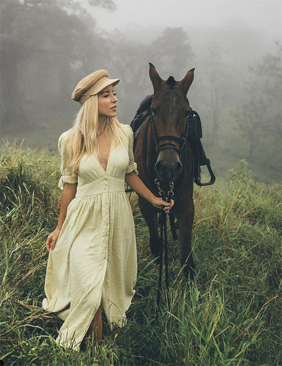
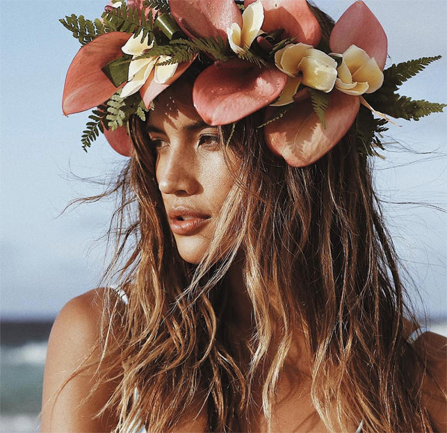
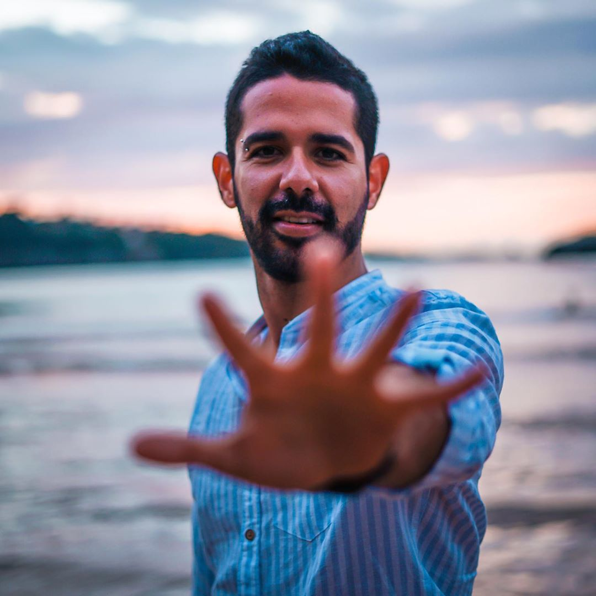
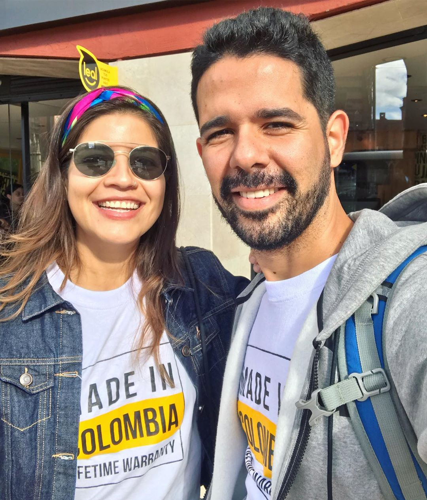

| Foto | Persona |
|---|---|
|  | Se llama Aggie, es polaca, estudió en Australia y en 2013 decidió mudarse a Los Ángeles y cambiar de vida. En su perfil de Instagram carga sus fotografías, vídeos e historias viajeras por todo el mundo. |
|  | Desde Hawaii, Brooke regala cada día a su legión de 'followers' unas sensuales y elegantes fotos de la playa y el surf. Una visión diferente del mar. |
|  | Beto es un palmirano que cuando acabo e estudiar se dejo llevar con su sueño y hoy en dia viaja y trabaja para el mismo. |
|  | Andres y Lina, los cuales hacen parte de este puesto, debido a que han dejado en buen lugar los lugares que visitan, además de que juntos han realizado un libro. |
Al viajar descubrimos y experimentamos nuevas cosas, las cuales muchas de ellas hacen que disfrutemos de la vida de forma distinta a como estábamos habituados. No quiero decir que uno no disfrute de la vida cuando no está de viaje, o que se tenga que viajar para disfrutar de la vida, pero es cierto que cuando uno viaja hace cosas que no suele hacer normalmente. Por ejemplo:
- Descubrir y probar nuevos sabores y olores, sobre todo con la comida.
- Disfrutar de paisajes diferentes a los conocidos, visitar lugares famosos y conocer la tradición de estos lugares.
- Actividades al aire libre que no has hecho antes, y te gustan.
Hasta que no dejas de tener algo no lo valoras en su justa medida. Estar fuera de lo que llamaríamos casa, lejos de ciertas comodidades y de personas que queremos, nos hace apreciarlas más a la vuelta. Apreciar lo que se tiene es importante para ser más feliz. Las personas tendemos a fijarnos y centrar nuestra atención en las cosas negativas que nos suceden, pero ¿y qué pasa con las cosas buenas? Están ahí, sólo hace falta que las aprecies.
El ser humano es un animal social. Necesitamos entrar en contacto con otras personas. Una cosa es viajar solo y otra bien distinta estar solo todo el rato sin hablar con nadie.
 Una de las cosas bonitas (y beneficiosas) de viajar es poder conocer a personas de otras
culturas y mantener conversaciones sobre su visión de las cosas en general, o de cualquier tema
que te interese conocer su opinión en particular. Pueden ser nativos del lugar u otros viajantes como tú.
Existen ciertos lugares que facilitan esos contactos. Por ejemplo, si atiendes a alguna clase o evento organizado
(por ejemplo, una conferencia o quedada de emprendedores, entre otros)
las zonas comunes del hostal o de la residencia de estudiantes, algunos locales de copas o PUBs, etc.
La cuestión es poner de tu parte, ignorar la timidez y el miedo al rechazo e iniciar conversaciones.
Que pase lo que tenga que pasar. Al fin y al cabo estamos para disfrutar.
Una de las cosas bonitas (y beneficiosas) de viajar es poder conocer a personas de otras
culturas y mantener conversaciones sobre su visión de las cosas en general, o de cualquier tema
que te interese conocer su opinión en particular. Pueden ser nativos del lugar u otros viajantes como tú.
Existen ciertos lugares que facilitan esos contactos. Por ejemplo, si atiendes a alguna clase o evento organizado
(por ejemplo, una conferencia o quedada de emprendedores, entre otros)
las zonas comunes del hostal o de la residencia de estudiantes, algunos locales de copas o PUBs, etc.
La cuestión es poner de tu parte, ignorar la timidez y el miedo al rechazo e iniciar conversaciones.
Que pase lo que tenga que pasar. Al fin y al cabo estamos para disfrutar.